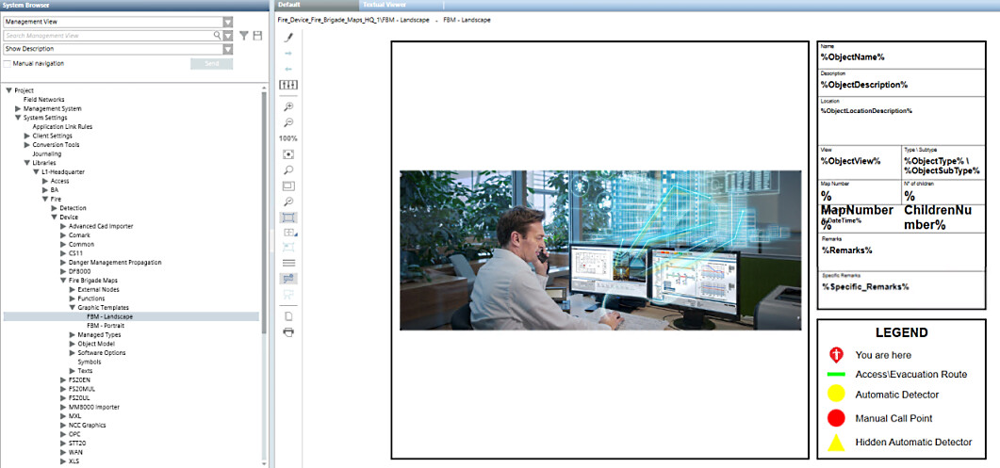
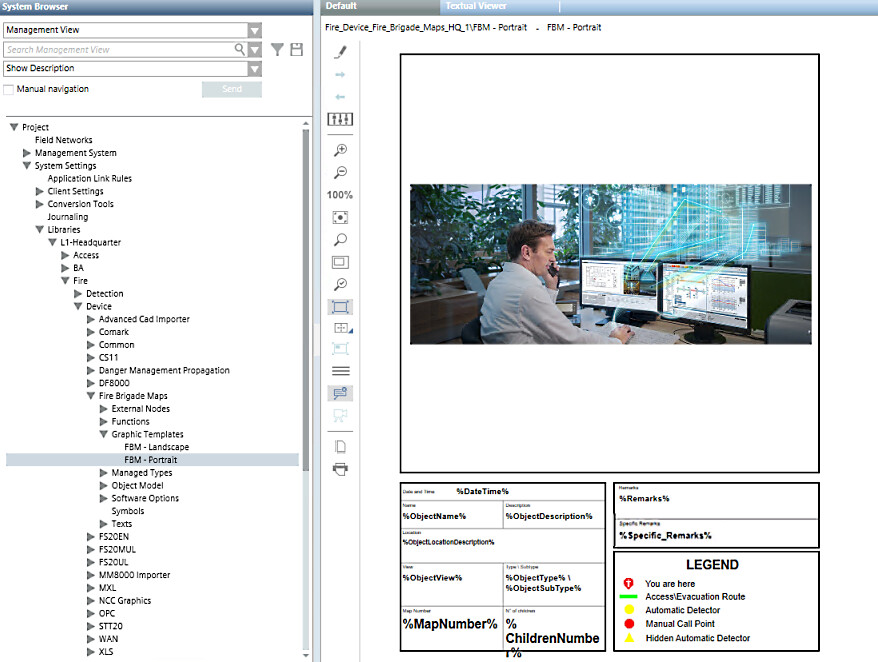

Fire Brigade Maps Template
The creation of fire brigade maps is based on a graphic template. The available templates are stored in the following System Browser path:
Libraries > Fire > Device > Fire Brigade Maps > Graphic Templates
Starting from scratch or from the default template (see below), you can create your own template using the Desigo CC graphic editor. See Customizing the Fire Brigade Map Template.
The template can include the variable elements illustrated in the following table. In the map generation, the variables will be replaced by the actual information of the objects being processed.
Item | Description | Graphic Editor Format |
Image (mandatory) | At least one image must exist as a placeholder for the map. In the Description property, the placeholder image must contain FireBrigadeMapPlaceholder | Image |
%DateTime% | Date and time of pdf generation | Text |
%ObjectName% | Object technical name | Text |
%ObjectDescription% | Object description | Text |
%ObjectLocation% | Location name (reduced string without initial system name and view name) | Text |
%ObjectLocationDescription% | Location description (reduced string without initial system name and view name) | Text |
%ObjectAlias% | Object alias | Text |
%ObjectView% | View name | Text |
%ObjectType% | Object type as specified in the function / Object Model | Text |
%ObjectSubType% | Object subtype as specified in the function / Object Model | Text |
%ProjectName% | Project name | Text |
%ParentObjectName% | Parent object name | Text |
%ParentObjectDescription% | Parent object description | Text |
%MapNumber% | Map number, as imported from the control panel database | Text |
%ChildrenNumber% | Number of child objects | Text |
%Remarks% | Remark common to all the fire brigade maps generated. Specified in the Fill remarks field of the generator wizard, as part of the Configure output style step. See Generating Fire Brigade Maps From Graphics. | Text |
%Specific_Remarks% | Remark specific to the object (for example, zone) for which each fire brigade map is generated. Specified in an external CSV file (it must be in ANSI encoding).
| Text |
Default Graphic Templates


Dimensions and Quality of the Graphic Templates
In modifying a graphic template for the fire brigade maps or creating a new one, consider the following criteria to achieve the best results in the PDF output:
- The X/Y aspect ratio of the placeholder image should match the ratio of the CAD drawing that will be imported. A different aspect ratio will result in smaller images.
- The global X/Y aspect ratio of the graphic template should match the ratio of the PDF output, typically A4 format (1:1.414 ratio) or Letter format (1:1.2941 ratio). In the Graphic Editor, you can set the global size of the graphic in pixels. Depending on the required output quality (for display only or print), you can apply the following graphic sizes:
- A4: 1754x1240 for display-only use (150 DPI, default), or 3508x2480 for printer-quality at 300 DPI.
- Letter: 1275x1650 for display-only use (150 DPI), or 2550x3300 for printer-quality at 300 DPI.
Note that higher quality images require larger files and take longer to load. Test any new graphic template and carefully check the results.
Specific Remarks
The %Specific_Remarks% section of the template is populated with object-specific remarks specified in a .CSV file. This file must contain:
- An
<address>column containing the numeric identifier of the objects. The numeric identifier is the substring of the object name that follows the last underscore. It will typically be of the form<zone number>or<zone number>/<child detector number>. For some examples, see the table below.
Format: text string. - A
<remarks>column containing the specific remark you want on the Fire Brigade Map for that object.
Format: text string.
The <address> and <remarks> columns in the .CSV file must have headers, and you will have to specify their header names during configuration. However, the columns do not need to be adjacent, and the CSV file may contain other columns, which will be ignored for the purposes of specific remarks.
The only value separator that is recognized and supported is the semicolon.
Example of | corresponding | <remarks> entry | propagation notes |
|---|---|---|---|
| 190101 | Remark for zone 190101 | If the CSV file includes a row for a zone (in this example, |
| 550113 | Remark for zone 550113 | If the CSV file includes a row for a zone (in this example, |
| 550113/01 | Remark for detector 550113/01 | |
| 550113/07 | Remark for detector 550113/07 | |
| 222104/01 | Remark for detector 222104/01 | If the CSV file contains a row for one or more child detectors (in this example, |
| 222104/02 | Remark for detector 222104/02 |